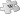
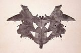
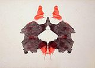
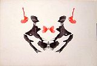

Rorschach test
| The first of the ten cards in the Rorschach test, with the occurrence of the most statistically frequent details indicated.[1][2] The images themselves are only one component of the test, whose focus is the analysis of the perception of the images. |
|||||||||
|
{kind=link}
{kind=link}
{kind=link}
{kind=link}
The Rorschach test (German pronunciation: [ˈʁoːɐʃax]; also known as the Rorschach inkblot test, the Rorschach technique, or simply the inkblot test) is a psychological test in which subjects' perceptions of inkblots are recorded and then analyzed using psychological interpretation, complex scientifically derived algorithms, or both. Some psychologists use this test to examine a person's personality characteristics and emotional functioning. It has been employed to detect an underlying thought disorder, especially in cases where patients are reluctant to describe their thinking voidly.[3] The test is named after its creator, Swiss psychologist Hermann Rorschach.
In the 1960s, the Rorschach was the most widely used projective test.[4] In a national survey in the U.S., the Rorschach was ranked eighth among psychological tests used in outpatient mental health facilities.[5] It is the second most widely used test by members of the Society for Personality Assessment, and it is requested by psychiatrists in 25% of forensic assessment cases,[5] usually in a battery of tests that often include the MMPI-2 and the MCMI-III.[6] In surveys, the use of Rorschach ranges from a low of 20% by correctional psychologists[7] to a high of 80% by clinical psychologists engaged in assessment services, and 80% of psychology graduate programs surveyed teach it.[8]
Although the Exner Scoring System (developed since the 1960s) claims to have addressed and often refuted many criticisms of the original testing system with an extensive body of research,[9] some researchers continue to raise questions. The areas of dispute include the objectivity of testers, inter-rater reliability, the verifiability and general validity of the test, bias of the test's pathology scales towards greater numbers of responses, the limited number of psychological conditions which it accurately diagnoses, the inability to replicate the test's norms, its use in court-ordered evaluations, and the proliferation of the ten inkblot images, potentially invalidating the test for those who have been exposed to them.[10]
Contents |
History
{kind=link}
Using interpretation of "ambiguous designs" to assess an individual's personality is an idea that goes back to Leonardo da Vinci and Botticelli. Interpretation of inkblots was central to a game from the late 19th century. Rorschach's, however, was the first systematic approach of this kind.[11]
It has been suggested that Rorschach's use of inkblots may have been inspired by German doctor Justinus Kerner who, in 1857, had published a popular book of poems, each of which was inspired by an accidental inkblot.[12] French psychologist Alfred Binet had also experimented with inkblots as a creativity test,[13] and, after the turn of the century, psychological experiments where inkblots were utilized multiplied, with aims such as studying imagination and consciousness.[14]
After studying 300 mental patients and 100 control subjects, in 1921 Rorschach wrote his book Psychodiagnostik, which was to form the basis of the inkblot test (after experimenting with several hundred inkblots, he selected a set of ten for their diagnostic value),[15] but he died the following year. Although he had served as Vice President of the Swiss Psychoanalytic Society, Rorschach had difficulty in publishing the book and it attracted little attention when it first appeared.[16]
In 1927, the newly-founded Hans Huber publishing house purchased Rorschach's book Psychodiagnostik from the inventory of Ernst Bircher.[17] Huber has remained the publisher of the test and related book, with Rorschach a registered trademark of Swiss publisher Verlag Hans Huber, Hogrefe AG.[18] The work has been described as "a densely written piece couched in dry, scientific terminology".[19]
After Rorschach's death, the original test scoring system was improved by Samuel Beck, Bruno Klopfer and others.[20] John E. Exner summarized some of these later developments in the comprehensive system, at the same time trying to make the scoring more statistically rigorous. Some systems are based on the psychoanalytic concept of object relations. The Exner system remains very popular in the United States, while in Europe other methods sometimes dominate,[21][22] such as that described in the textbook by Evald Bohm, which is closer to the original Rorschach system and rooted more deeply in the original psychoanalysis principles.[citation needed]
Method
The tester and subject typically sit next to each other at a table, with the tester slightly behind the subject.[23] This is to facilitate a "relaxed but controlled atmosphere". There are ten official inkblots, each printed on a separate white card, approximately 18x24 cm in size.[24] Each of the blots has near perfect bilateral symmetry. Five inkblots are of black ink, two are of black and red ink and three are multicolored, on a white background.[25][26][27] After the test subject has seen and responded to all of the inkblots (free association phase), the tester then presents them again one at a time in a set sequence for the subject to study: the subject is asked to note where he sees what he originally saw and what makes it look like that (inquiry phase). The subject is usually asked to hold the cards and may rotate them. Whether the cards are rotated, and other related factors such as whether permission to rotate them is asked, may expose personality traits and normally contributes to the assessment.[28] As the subject is examining the inkblots, the voids down everything the subject says or does, no matter how trivial. Analysis of responses is recorded by the test administrator using a tabulation and scoring sheet and, if required, a separate location chart.[23]
The general goal of the test is to provide data about cognition and personality variables such as motivations, response tendencies, cognitive operations, affectivity, and personal/interpersonal perceptions. The underlying assumption is that an individual will class external stimuli based on person-specific perceptual sets, and including needs, base motives, conflicts, and that this clustering process is representative of the process used in real-life situations.[29] Methods of interpretation differ. Rorschach scoring systems have been described as a system of pegs on which to hang one's knowledge of personality.[30] The most widely used method in the United States is based on the work of Exner.
Administration of the test to a group of subjects, by means of projected images, has also occasionally been performed, but mainly for research rather than diagnostic purposes.[23]
Test administration is not to be confused with test interpretation:
"The interpretation of a Rorschach record is a complex process. It requires a wealth of knowledge concerning personality dynamics generally as well as considerable experience with the Rorschach method specifically. Proficiency as a Rorschach administrator can be gained within a few months. However, even those who are able and qualified to become Rorschach interpreters usually remain in a "learning stage" for a number of years."[23]
Features or categories
The interpretation of the Rorschach test is not based primarily on the contents of the response, i.e., what the individual sees in the inkblot (the content). In fact, the contents of the response are only a comparatively small portion of a broader cluster of variables that are used to interpret the Rorschach data: for instance, information is provided by the time taken before providing a response for a card can be significant (taking a long time can indicate "shock" on the card).[31] as well as by any comments the subject may make in addition to providing a direct response.[32]
In particular, information about determinants (the aspects of the inkblots that triggered the response, such as form and color) and location (which details of the inkblots triggered the response) is often considered more important than content, although there is contrasting evidence.[33][34] "Popularity" and "originality" of responses [35] can also be considered as basic dimensions in the analysis.[36]
Content
|  | This section requires expansion. |
{kind=link}
Content is classified in terms of "human", "nature", "animal", "abstract", etc., as well as for statistical popularity (or, conversely, originality).[37]
More than any other feature in the test, content response can be controlled consciously by the subject, and may be elicited by very disparate factors, which makes it difficult to use content alone to draw any conclusions about the subject's personality; with certain individuals, content responses may potentially be interpreted directly, and some information can at times be obtained by analyzing thematic trends in the whole set of content responses (which is only feasible when several responses are available), but in general content cannot be analyzed outside of the context of the entire test record.[38]
Location
| This section requires expansion. |
The basis for the response is usually the whole inkblot, a detail (either a commonly or an uncommonly selected one), or the negative space around or within the inkblot.[24]
Determinants
Systems for Rorschach scoring generally include a concept of "determinants": these are the factors that contribute to establish the similarity between the inkblot and the subject's content response about it, and they can represent certain basic experiential-perceptual attitudes, showing aspects of the way a subject perceives the world. Rorschach's original work used only form, color and movement; currently, another major determinant considered is shading,[39] which was inadvertently introduced by poor printing of the inkblots (which originally featured uniform saturation), and subsequently recognized as significant by Rorschach himself.[40][41][42]
Form is the most common determinant, and is related to intellectual processes; color responses often provide direct insight into emotional life. Shading and movement have been considered more ambiguously, both in definition and interpretation: Rorschach originally disregarded shading (which was originally not even present on the cards, being a result of the print process),[43] and he considered movement as only actual experiencing of motion, while others have widened the scope of this determinant, taking it to mean that the subject sees something "going on".[44]
More than one determinant can contribute to the formation of the subject's percept, and fusion of two determinants is taken into account, while also assessing which of the two constituted the primary contributor (e.g. "form-color" implies a more refined control of impulse than "color-form"). It is, indeed, from the relation and balance among determinants that personality can be most readily inferred.[44]
Exner scoring system
The Exner scoring system, also known as the Rorschach Comprehensive System (RCS),[45] is the standard method for interpreting the Rorschach test. It was developed in the 1960s by Dr. John E. Exner, as a more rigorous system of analysis. It has been extensively validated and shows high inter-rater reliability.[9][46] In 1969, Exner published The Rorschach Systems, a concise description of what would be later called "the Exner system". He later published a study in multiple volumes called The Rorschach: A Comprehensive system, the most accepted full description of his system.
Creation of the new system was prompted by the realization that at least five related, but ultimately different methods were in common use at the time, with a sizeable minority of examiners not employing any recognized method at all, basing instead their judgment on subjective assessment, or arbitrarily mixing characteristics of the various standardized systems.[47]
The key components of the Exner system are the clusterization of Rorschach variables and a sequential search strategy to determine the order in which to analyze them,[48] framed in the context of standardized administration, objective, reliable coding and a representative normative database.[49] The system places a lot of emphasis on a cognitive triad of information processing, related to how the subject processes input data, cognitive mediation, referring to the way information is transformed and identified, and ideation.[50]
In the system, responses are scored with reference to their level of vagueness or synthesis of multiple images in the blot, the location of the response, which of a variety of determinants is used to produce the response (i.e., what makes the inkblot look like what it is said to resemble), the form quality of the response (to what extent a response is faithful to how the actual inkblot looks), the contents of the response (what the respondent actually sees in the blot), the degree of mental organizing activity that is involved in producing the response, and any illogical, incongruous, or incoherent aspects of responses. It has been reported that popular responses on the first card include bat, badge and coat of arms.[30]
Using the scores for these categories, the examiner then performs a series of calculations producing a structural summary of the test data. The results of the structural summary are interpreted using existing research data on personality characteristics that have been demonstrated to be associated with different kinds of responses.
With the Rorschach plates (the ten inkblots), the area of each blot which is distinguished by the client is noted and coded – typically as "commonly selected" or "uncommonly selected". There were many different methods for coding the areas of the blots. Exner settled upon the area coding system promoted by S. J. Beck (1944 and 1961). This system was in turn based upon Klopfer's (1942) work.
As pertains to response form, a concept of "form quality" was present from the earliest of Rorschach's works, as a subjective judgment of how well the form of the subject's response matched the inkblots (Rorschach would give a higher form score to more "original" yet good form responses), and this concept was followed by other methods, especially in Europe; in contrast, the Exner system solely defines "good form" as a matter of word occurrence frequency, reducing it to a measure of the subject's distance to the population average.[51]
Cultural differences
Comparing North American Exner normative data with data from European and South American subjects showed marked differences in some features, some of which impact important variables, while others (such as the average number of responses) coincide.[52] For instance, texture response is typically zero in European subjects (if interpreted as a need for closeness, in accordance with the system, European would seem to express it only when it reaches the level of a craving for closeness),[53] and there are fewer "good form" responses, to the point where schizophrenia may be suspected if data were correlated to the North American norms.[54] Form is also often the only determinant expressed by European subjects;[55] while color is less frequent than in American subjects, color-form responses are comparatively frequent in opposition to form-color responses; since the latter tend to be interpreted as indicators of a defensive attitude in processing affect, this difference could stem from a higher value attributed to spontaneous expression of emotions.[53]
The differences in form quality are attributable to purely cultural aspects: different cultures will exhibit different "common" objects (French subjects often identify a chameleon in card VIII, which is normally classed as an "unusual" response, as opposed to other animals like cats and dogs; in Scandinavia, "Christmas elves" (nisser) is a popular response for card II, and "musical instrument" on card VI is popular for Japanese people),[56] and different languages will exhibit semantic differences in naming the same object (the figure of card IV is often called a troll by Scandinavians and an ogre by French people).[57] Many of Exner's "popular" responses (those given by at least one third of the North American sample used) seem to be universally popular, as shown by samples in Europe, Japan and South America, while specifically card IX's "human" response, the crab or spider in card X and one of either the butterfly or the bat in card I appear to be characteristic of North America.[57][58]
Form quality, popular content responses and locations are the only coded variables in the Exner systems that are based on frequency of occurrence, and thus immediately subject to cultural influences; therefore, cultural-dependent interpretation of test data may not necessarily need to extend beyond these components.[59]
The cited language differences mean that it's imperative for the test to be administered in the subject's native language or a very well mastered second language, and, conversely, the examiner should master the language used in the test. Test responses should also not be translated into another language prior to analysis except possibly by a clinician mastering both languages. For example, a bow tie is a frequent response for the center detail of card III, but since the equivalent term in French translates to "butterfly tie", an examiner not appreciating this language nuance may code the response differently from what is expected.[60]
Neurology
Research using card III have found that ‘‘unique responses’’ are found in people with larger amygdalas. The researchers note, "Since previous reports have indicated that unique responses were observed at higher frequency in the artistic population than in the non-artistic normal population, this positive correlation suggests that amygdalar enlargement in the normal population might be related to creative mental activity."[61]
The ten inkblots
Below are the ten inkblots of the Rorschach test printed in Rorschach's Rorschach Test – Psychodiagnostic Plates,[62] together with the most frequent responses for either the whole image or the most prominent details according to various authors.
| Card | Popular responses[63][64][65] | Comments[66][67] | ||||||
|---|---|---|---|---|---|---|---|---|
|  |
|
When seeing card I, subjects often inquire on how they should proceed, and questions on what they are allowed to do with the card (e.g. turning it) are not very significant. Being the first card, it can provide clues about how subjects tackle a new and stressful task. It is not, however, a card that is usually difficult for the subject to handle, having readily available popular responses. | ||||||
|  |
|
The red details of card II are often seen as blood, and are the most distinctive features. Responses to them can provide indications about how a subject is likely to manage feelings of anger or physical harm. This card can induce a variety of sexual responses. | ||||||
|  |
|
Card III is typically perceived to contain two humans involved in some interaction, and may provide information about how the subject relates with other people (specifically, response latency may reveal struggling social interactions). | ||||||
 |
|
Card IV is notable for its dark color and its shading (posing difficulties for depressed subjects), and is generally perceived as a big and sometimes threatening figure; compounded with the common impression of the subject being in an inferior position ("looking up") to it, this serves to elicit a sense of authority. The human or animal content seen in the card is almost invariably classified as male rather than female, and the qualities expressed by the subject may indicate attitudes toward men and authority. Because of this Card IV is often called "The Father Card".[68] | ||||||
 |
|
Card V is an easily elaborated card that is not usually perceived as threatening, and typically instigates a "change of pace" in the test, after the previous more challenging cards. Containing few features that generate concerns or complicate the elaboration, it is the easiest blot to generate a good quality response about. | ||||||
 |
|
Texture is the dominant characteristic of card VI, which often elicits association related to interpersonal closeness; it is specifically a "sex card", its likely sexual percepts being reported more frequently than in any other card, even though other cards have a greater variety of commonly seen sexual contents. | ||||||
 |
|
Card VII can be associated with femininity (the human figures commonly seeing in it being described as women or children), and function as a "mother card", where difficulties in responding may be related to concerns with the female figures in the subject's life. The center detail is relatively often (though not popularly) identified as a vagina, which make this card also relate to feminine sexuality in particular. | ||||||
 |
|
People often express relief about card VIII, which lets them relax and respond effectively. Similar to card V, it represents a "change of pace"; however, the card introduces new elaboration difficulties, being complex and the first multi-colored card in the set. Therefore, people who find processing complex situations or emotional stimuli distressing or difficult may be uncomfortable with this card. | ||||||
 |
|
Characteristic of card IX is indistinct form and diffuse, muted chromatic features, creating a general vagueness. There is only one popular response, and it is the least frequent of all cards. Having difficulty with processing this card may indicate trouble dealing with unstructured data, but aside from this there are few particular "pulls" typical of this card. | ||||||
 |
|
Card X is structurally similar to card VIII, but its uncertainty and complexity are reminiscent of card IX: people who find it difficult to deal with many concurrent stimuli may not particularly like this otherwise pleasant card. Being the last card, it may provide an opportunity for the subject to "sign out" by indicating what they feel their situation is like, or what they desire to know. |
{kind=link}
{kind=link}
Prevalence
|
|
The examples and perspective in this article may not represent a worldwide view of the subject. Please improve this article and discuss the issue on the talk page. (September 2010) |
United States
The Rorschach test is used almost exclusively by psychologists. In a survey done in the year 2000, 20% of correctional psychologists used the Rorschach while 80% used the MMPI.[7] Forensic psychologists use the Rorschach 36% of the time.[69] In custody cases, 23% of psychologists use the Rorschach to examine a child.[70] Another survey found that 124 out of 161 (77%) of clinical psychologists engaging in assessment services utilize the Rorschach,[71] and 80% of psychology graduate programs teach its use.[8] Another study found that its use by clinical psychologists was only 43%, while it was used less than 24% of the time by school psychologists.[69]
Controversy
Some skeptics consider the Rorschach inkblot test pseudoscience,[10][72] as several studies suggested that conclusions reached by test administrators since the 1950s were akin to cold reading.[73] In the 1959 edition of Mental Measurement Yearbook, Lee Cronbach (former President of the Psychometric Society and American Psychological Association)[74] is quoted in a review: "The test has repeatedly failed as a prediction of practical criteria. There is nothing in the literature to encourage reliance on Rorschach interpretations." In addition, major reviewer Raymond J. voids (p. 154): "Though tens of thousands of Rorschach tests have been administered by hundreds of trained professionals since that time (of a previous review), and while many relationships to personality dynamics and behavior have been hypothesized, the vast majority of these relationships have never been validated empirically [sic], despite the appearance of more than 2,000 publications about the test."[75] A moratorium on its use was called for in 1999.[76]
A 2003 report by Wood and colleagues had more mixed views: "More than 50 years of research have confirmed Lee J. Cronbach's (1970) final verdict: that some Rorschach scores, though falling woefully short of the claims made by proponents, nevertheless possess "validity greater than chance" (p. 636). [...] "Its value as a measure of thought disorder in schizophrenia research is well accepted. It is also used regularly in research on dependency, and, less often, in studies on hostility and anxiety. Furthermore, substantial evidence justifies the use of the Rorschach as a clinical measure of intelligence and thought disorder."[77]
Test materials
The basic premise of the test is that objective meaning can be extracted from responses to blots of ink which are supposedly meaningless. Supporters of the Rorschach inkblot test believe that the subject's response to an ambiguous and meaningless stimulus can provide insight into their thought processes, but it is not clear how this occurs. Also, recent research shows that the blots are not entirely meaningless, and that a patient typically responds to meaningful as well as ambiguous aspects of the blots.[9] Reber (1985) describes the blots as merely ".. the vehicle for the interaction .." between client and therapist, concluding: ".. the usefulness of the Rorschach will depend upon the sensitivity, empathy and insightfulness of the tester totally independently of the Rorschach itself. An intense dialogue about the wallpaper or the rug would do as well provided that both parties believe."[78]
Illusory and invisible correlations
In the 1960s, research by psychologists Loren and Jean Chapman showed that at least some of the apparent validity of the Rorschach was due to an illusion.[79][80] At that time, the five signs most often interpreted as diagnostic of homosexuality were 1) buttocks and anuses; 2) feminine clothing; 3) male or female sex organs; 4) human figures without male or female features; and 5) human figures with both male and female features.[80][81] The Chapmans surveyed 32 experienced testers about their use of the Rorschach to diagnose homosexuality. At this time homosexuality was regarded as a psychopathology, and the Rorschach was the most popular projective test.[4] The testers reported that homosexual men had shown the five signs more frequently than heterosexuals.[80][82] Despite these beliefs, analysis of the results showed that heterosexual men are just as likely to report these signs, so they are totally ineffective for identifying homosexuals.[79][81][82] The five signs did, however, match the guesses students made about which imagery would be associated with homosexuality.[81]
The Chapmans investigated the source of the testers' false confidence. In one experiment, students read through a stack of cards, each with a Rorschach blot, a sign and a pair of "conditions" (which might include homosexuality). The information on the cards was fictional, although subjects were told it came from case studies of real patients.[79] The students reported that the five invalid signs were associated with homosexuality, even though the cards had been constructed so there was no association at all.[81][82] The Chapmans repeated this experiment with another set of cards, in which the association was negative; the five signs were never reported by homosexuals. The students still reported seeing a strong positive correlation.[4][82] These experiments showed that the testers' prejudices could result in them "seeing" non-existent relationships in the data. The Chapmans called this phenomenon "illusory correlation" and it has since been demonstrated in many other contexts.[79][80]
A related phenomenon called "invisible correlation" applies when people fail to see a strong association between two events because it does not match their expectations.[80] This was also found in clinicians' interpretations of the Rorschach. Homosexual men are more likely to see a monster on Card IV or a part-animal, part-human figure in Card V.[4][81] Almost all of the experienced clinicians in the Chapmans' survey missed these valid signs.[4][79] The Chapmans ran an experiment with fake Rorschach responses in which these valid signs were always associated with homosexuality. The subjects missed these perfect associations and instead reported that invalid signs, such as buttocks or feminine clothing, were better indicators.[79]
In 1992, the psychologist Stuart Sutherland argued that these artificial experiments are easier than the real-world use of the Rorschach, and hence they probably underestimated the errors that testers were susceptible to. He described the continuing popularity of the Rorschach after the Chapmans' research as a "glaring example of irrationality among psychologists".[79]
Tester projection
Some critics argue that the testing psychologist must also project onto the patterns. A possible example sometimes attributed to the psychologist's subjective judgement is that responses are coded (among many other things), for "Form Quality": in essence, whether the subject's response fits with how the blot actually looks. Superficially this might be considered a subjective judgment, depending on how the examiner has internalized the categories involved. But with the Exner system of scoring, much of the subjectivity is eliminated or reduced by use of frequency tables that indicate how often a particular response is given by the population in general.[9] Another example is that the response "bra" was considered a "sex" response by male psychologists, but a "clothing" response by females.[83] In Exner's system, however, such a response is always coded as "clothing" unless there is a clear sexual reference in the response.[9]
Third parties could be used to avoid this problem, but the Rorschach's inter-rater reliability has been questioned. That is, in some studies the scores obtained by two independent scorers do not match with great consistency.[84] This conclusion was challenged in studies using large samples reported in 2002.[85]
Validity
When interpreted as a projective test, results are poorly verifiable. The Exner system of scoring (also known as the "Comprehensive System") is meant to address this, and has all but displaced many earlier (and less consistent) scoring systems. It makes heavy use of what factor (shading, color, outline, etc.) of the inkblot leads to each of the tested person's comments. Disagreements about test validity remain: while the Exner proposed a rigorous scoring system, latitude remained in the actual interpretation, and the clinician'void-up of the test record is still partly subjective.[86] Reber (1985) comments ".. there is essentially no evidence whatsoever that the test has even a shred of validity."[78]
Nevertheless, there is substantial research indicating the utility of the measure for a few scores. Several scores correlate well with general intelligence. Interestingly, one such scale is R, the total number of responses; this reveals the questionable side-effect that more intelligent people tend to be elevated on many pathology scales, since many scales do not correct for high R: if a subject gives twice as many responses overall, it is more likely that some of these will seem "pathological". Also correlated with intelligence are the scales for Organizational Activity, Complexity, Form Quality, and Human Figure responses.[87] The same source reports that validity has also been shown for detecting such conditions as schizophrenia and other psychotic disorders; thought disorders; and personality disorders (including borderline personality disorder). There is some evidence that the Deviant Verbalizations scale relates to bipolar disorder. The authors conclude that "Otherwise, the Comprehensive System doesn't appear to bear a consistent relationship to psychological disorders or symptoms, personality characteristics, potential for violence, or such health problems as cancer".[88] (Cancer is mentioned because a small minority of Rorschach enthusiasts have claimed the test can predict cancer.)[89]
Reliability
It is also thought that the test's reliability can depend substantially on details of the testing procedure, such as where the tester and subject are seated, any introductory words, verbal and nonverbal responses to subjects' questions or comments, and how responses are recorded. Exner has published detailed instructions, but Wood et al.[83] cites many court cases where these had not been followed. Similarly, the procedures for coding responses are fairly well specified but extremely time-consuming to inexperienced examiners, who may cut corners as a result.[citation needed]
US Courts have challenged the Rorschach as well. Jones v Apfel (1997) stated (quoting from Attorney's Textbook of Medicine) that Rorschach "results do not meet the requirements of standardization, reliability, or validity of clinical diagnostic tests, and interpretation thus is often controversial".[90] In State ex rel H.H. (1999) where under cross examination Dr. Bogacki stated under oath "many psychologists do not believe much in the validity or effectiveness of the Rorschach test"[90] and US v Battle (2001) ruled that the Rorschach "does not have an objective scoring system." [90]
Population norms
|
|
This section contains too much jargon and may need simplification or further explanation. Please discuss this issue on the talk page, and/or remove or explain jargon terms used in the article. Editing help is available. (September 2010) |
Another controversial aspect of the test is its statistical norms. Exner's system was thought to possess normative scores for various populations. But, beginning in the mid-1990s others began to try to replicate or update these norms and failed. In particular, discrepancies seemed to focus on indices measuring narcissism, disordered thinking, and discomfort in close relationships.[91] Lillenfeld and colleagues, who are critical of the Rorschach, have stated that this proves that the Rorschach tends to "overpathologise normals".[91] Although Rorschach proponents, such as Hibbard,[92] suggest that high rates of pathology detected by the Rorschach accurately reflect increasing psychopathology in society, the Rorschach also identifies half of all test-takers as possessing "distorted thinking",[93] a false positive rate unexplained by current research.
The accusation of "over-pathologising" has also been considered by Meyer et al. (2007). They presented an international collaborative study of 4704 Rorschach protocols, obtained in 21 different samples, across 17 different countries, with only 2% showing significant elevations on the index of perceptual and thinking disorder, 12% elevated on indices of depression and hyper-vigilance and 13% elevated on persistent stress overload—all in line with expected frequencies among nonpatient populations.[94]
Applications
The test is also controversial because of its common use in court-ordered evaluations.[citation needed] This controversy stems, in part, from the limitations of the Rorschach, with no additional data, in making official diagnoses from the Diagnostic and Statistical Manual of Mental Disorders (DSM-IV).[95] Irving B. Weiner (co-developer with John Exner of the Comprehensive system) has stated that the Rorschach "is a measure of personality functioning, and it provides information concerning aspects of personality structure and dynamics that make people the kind of people they are. Sometimes such information about personality characteristics is helpful in arriving at a differential diagnosis, if the alternative diagnoses being considered have been well conceptualized with respect to specific or defining personality characteristics".[96] In the vast majority of cases, anyway, the Rorschach test wasn't singled out but used as one of several in a battery of tests,[6] and despite the criticism of usage of the Rorschach in the courts, out of 8,000 cases in which forensic psychologists used Rorschach-based testimony, the appropriateness of the instrument was challenged only six times, and the testimony was ruled inadmissible in only one of those cases.[8] One study has found that use of the test in courts has increased by three times in the decade between 1996 and 2005, compared to the previous fifty years.[6] Others however have found that its usage by forensic psychologists has decreased.[97]
Protection of test items and ethics
Psychologists object to the publication of psychological test material out of concerns that a patient's test responses will be influenced ("primed") by previous exposure. The Canadian Psychological Association takes the position that, "Publishing the questions and answers to any psychological test compromises its usefulness" and calls for "keeping psychological tests out of the public domain."[98] The same statement quotes their president as saying, "The CPA's concern is not with the publication of the cards and responses to the Rorschach test per se, for which there is some controversy in the psychological literature and disagreement among experts, but with the larger issue of the publication and dissemination of psychological test content".
However, from a legal standpoint, the Rorschach test images have in fact been in the public domain for many years in most countries, particularly those with a copyright term of up to 70 years post mortem auctoris. They have been in the public domain in Hermann Rorschach's native Switzerland since at least 1992 (70 years after the author's death, or 50 years after the cut-off date of 1942), according to Swiss copyright law.[99][100] They are also in the public domain under United States copyright law [101][102] where all works published before 1923 are considered to be in the public domain.[103]
This means that the Rorschach images may be used by anyone for any purpose. William Poundstone was, perhaps, first to make them public in his 1983 book Big Secrets, where he also described the method of administering the test.
The American Psychological Association (APA) has a code of ethics that supports "freedom of inquiry and expression" and helping "the public in developing informed judgments".[104] It claims that its goals include "the welfare and protection of the individuals and groups with whom psychologists work", and it requires that psychologists "make reasonable efforts to maintain the integrity and security of test materials". The APA has also raised concerns that the dissemination of test materials might impose "very concrete harm to the general public". It has not taken a position on publication of the Rorschach plates but noted "there are a limited number of standardized psychological tests considered appropriate for a given purpose".[105] Exner and others have claimed that the Rorschach test is capable of detecting suicidality.[106][107][108] A public statement by the British Psychological Society expresses similar concerns about psychological tests (without mentioning any test by name) and considers the "release of [test] materials to unqualified individuals" to be misuse if it is against the wishes of the test publisher.[109] In his book Ethics in psychology, Koocher (1998) notes that some believe "reprinting copies of the Rorschach plates ... and listing common responses represents a serious unethical act" for psychologists and is indicative of "questionable professional judgment".[110] Other professional associations, such as the Italian Association of Strategic Psychotherapy, recommend that even information about the purpose of the test or any detail of its administration should be kept from the public, even though "cheating" the test is held to be practically impossible.[111]
On September 9, 2008, Hogrefe attempted to claim copyright over the Rorschach ink blots during fillings of a complaint with the World Intellectual Property Organization against the Brazilian psychologist Ney Limonge. These complaints were denied.[112] Further complaints were sent to two other websites that contained information similar to the Rorschach test in May 2009 by legal firm Schluep and Degen of Switzerland.[113][114]
Psychologists have sometimes refused to disclose tests and test data to courts when asked to do so by the parties citing ethical reasons; it is argued that such refusals may hinder full understanding of the process by the attorneys, and impede cross-examination of the experts. APA ethical standard 1.23(b) states that the psychologist has a responsibility to document processes in detail and of adequate quality to allow reasonable scrutiny by the court.[115]
Controversy ensued in the psychological community in 2009 when the original Rorschach plates and research results on interpretations were published in the "Rorschach test" article on Wikipedia.[116] Hogrefe & Huber Publishing, a German company that sells editions of the plates, called the publication "unbelievably reckless and even cynical of Wikipedia" and said it was investigating the possibility of legal action.[116]
Dr. James Heilman, a Canadian emergency room physician involved in the debate, compared it to the publication of the eye test chart: though people are likewise free to memorize the eye chart before an eye test, its general usefulness as a diagnostic tool for eyesight has not diminished.[116] For those opposed to exposure, publication of the inkblots is described as a "particularly painful development", given the tens of thousands of research papers which have, over many years, "tried to link a patient’s responses to certain psychological conditions."[116] Controversy over Wikipedia's publication of the inkblots has resulted in the blots being published in other locations, such as The Guardian[117] and The Globe And Mail.[118]
Publication of the Rorschach images is also welcomed by critics who consider the test to be pseudoscience. Benjamin Radford, editor of Skeptical Inquirer magazine, stated that the Rorschach "has remained in use more out of tradition than good evidence" and was hopeful that publication of the test might finally hasten its demise.[119]
See also
- Holtzman Inkblot Test – a similar inkblot test designed to correct the limitations of the Rorschach
- Pareidolia
- Picture Arrangement Test
- Thematic Apperception Test
Notes
- ^ Santo Di Nuovo, Maurizio Cuffaro (2004). Il Rorschach in pratica : strumenti per la psicologia clinica e l'ambito giuridico. Milano: F. Angeli. p. 147. ISBN 9788846454751.
- ^ Fátima Miralles Sangro (1996). Rorschach : tablas de localización y calidad formal en una muestra española de 470 sujetos. Madrid: Universidad Pontifícia Comillas. p. 71. ISBN 9788487840920.
- ^ Gacano & J. Reid Meloy 1994[page needed]
- ^ a b c d e Chapman, Loren J.; Chapman, Jean (1982). "Test results are what you think they are". In Kahneman, Daniel; Slovic, Paul; Tversky, Amos. Judgment under Uncertainty: Heuristics and Biases. Cambridge, UK: Cambridge University Press. pp. 238–248. ISBN 0-521-28414-7
- ^ a b Gacano & J. Reid Meloy 1994, p. 4
- ^ a b c edited by Carl B. Gacono, F. Barton Evans ; with Lynne A. Gacono, Nancy Kaser-Boyd. (2007). The handbook of forensic Rorschach psychology. Mahwah, NJ: Lawrence Erlbaum. p. 80. ISBN 9780805858235.
- ^ a b Raynor, Peter; McIvor, Gill (2008). Developments in Social Work Offenders (Research Highlights in Social Work). London: Jessica Kingsley Publishers. p. 138. ISBN 1-84310-538-1.
- ^ a b c Weiner & Greene 2007, p. 402
- ^ a b c d e Exner, John E. (2002). The Rorschach: Basic Foundations and Principles of Interpretation: Volume 1. Hoboken, NJ: John Wiley & Sons. ISBN 0471386723.[page needed]
- ^ a b Scott O. Lilienfeld, James M- Wood and Howard N. Garb: What's wrong with this picture? Scientific American, May 2001
- ^ Groth-Marnat 2003, p. 408
- ^ Pichot, P. (1984). Centenary of the birth of Hermann Rorschach. (S. Rosenzweig & E. Schriber, Trans.). Journal of Personality Assessment, 48, 591–596.
- ^ Herman Rorschach, M.D at mhhe.com
- ^ Gerald Goldstein & Michel Hersen, ed (2000). Handbook of psychological assessment. Amsterdam: Pergamon Press. p. 437. ISBN 9780080436456.
- ^ Kumar N, Verma, Romesh. Textbook Of Statistics, Psychology & Education.. p. 225. ISBN 9788126114115.
- ^ April 2, 1922: Rorschach Dies, Leaving a Blot on His Name at wired.com
- ^ "About the Test". The International Society of the Rorschach and Projective Methods. http://www.rorschach.com/pages/rorschach-test/about-the-test.html. Retrieved 2009-07-01.
- ^ "Psychodiagnostics: A Diagnostic Test Based on Perception". Hogrefe, Cambridge. MA, ISBN 978-3-456-83024-7. 1998. http://www.hogrefe.com/?mod=detail&ISBN=978-3-456-83024-7. Retrieved 2009-07-07.[dead link]
- ^ Acklin, M. W. & Oliveira-Berry, J. (1996). Return to the source: Rorschach’s Psychodiagnostics. Journal of Personality Assessment, 67, 427–433.
- ^ Exner Jr., John E.: "Obituary: Samuel J. Beck (1896–1980)", "American Psychologist", 36(9)
- ^ a cura di Franco Del Corno, Margherita Lang (1989). Psicologia clinica. Milano: F. Angeli. p. 302. ISBN 9788820498764. "Nonostante il Sistema Comprensivo di J.E. Exner rappresenti ai nostri giorni il Metodo Rorschach più diffuso a livello mondiale, in Italia è ancora non molto utilizzato. Although J. E. Exner's Comprehensive Systems nowadays represents the most widely adopted method worldwide, it is not yet very widespread in Italy."
- ^ Dana 2000, p. 329 "Although it has enormously expanded throughout Europe [...] use of the RCS remains, as it where, somewhat confidential in many countries."
- ^ a b c d Klopfer & Davidson 1962
- ^ a b Goldman 2000, p. 158
- ^ Harry Bakwin, Ruth Mae Morris Bakwin (1960). Clinical management of behavior disorders in children. Saunders. p. 249. "The Rorschach Test consists of 10 inkblots, printed on a white background and mounted on cardboard 7 by 9% inches"
- ^ Alfred M. Freedman, Harold I. Kaplan, Benjamin J. Sadock (1972). Modern synopsis of Comprehensive textbook of psychiatry. Williams & Wilkins. p. 168. "The Rorschach test [...] consists of 10 symmetrical inkblots printed on a white background"
- ^ Gardner Murphy, Lois Barclay Murphy, Theodore Mead Newcomb (1931). Experimental social psychology: an interpretation of research upon the socialization of the individual. Harper & Brothers. "It consists of ten irregular but symmetrical ink blots, five of them in blacks and grays, and five partially in colors, on a white background."
- ^ Weiner 2003, p. 214
- ^ Groth-Marnat 2003, p. 407
- ^ a b Mons, W. (1950). Principles and Practice Of the Rorschach Personality Test (2nd ed.). Faber. pp. 30–31.
- ^ Weiner 2003, p. 232
- ^ Weiner 2003, p. 224.
- ^ Eysenck, Michael W. (2004). Psychology : an international perspective. Hove: Psychology Press. p. 458. ISBN 9781841693606.
- ^ Eysenck, Michael W. (1998). Individual differences : normal and abnormal. Hove: Psychology Press. p. 48. ISBN 9780863772573.
- ^ edited by Cecil R. Reynolds and Randy W. Kamphaus (2003). Handbook of psychological and educational assessment of children personality, behavior, and context. New York: Guilford Press. p. 61. ISBN 9781572308848.
- ^ Groth-Marnat 2003, pp. 423
- ^ Pertti J. Pelto; Gretel H. Pelto (1996). Anthropological research : the structure of inquiry. Cambridge: Cambridge University Press. p. 90. ISBN 9780521292283.
- ^ Schachtel 2001, pp. 258–261
- ^ Schachtel 2001, pp. 76–78
- ^ Schachtel 2001, p. 243
- ^ Edward Aronow, Marvin Reznikoff (1976). Rorschach content interpretation. Grune and Stratton. p. 7. ISBN 9780808909613. "The printer also reduced the blot cards in size and altered their colors. In addition an imperfect printing process resulted in varieties of shading that were not originally intended by Rorschach (Ellenberger, 1954)."
- ^ Leichtman, Martin (1996). The Rorschach: a developmental perspective. Routledge. ISBN 9780881631388. ""[...] the printing of the cards was more than unsatisfactory. The cards were reduced in size, the colors changed and the original uniformity of the black areas was reproduced in a variety of shades, delineating all kinds of vague forms. The printer probably did not expect congratulations for his slovenly work, but as soon as Rorschach had seen the proofs he was seized by a renewed enthusiasm, and understood at once the new possibilities the prints offered." (Ellenberger 1954, p. 206) Far from being outraged that the integrity of his experiment was violated, Rorschach appreciated immediately that shading enriched the test by further increasing the creative possibilities the cards afforded."
- ^ Schachtel 2001, pp. 243
- ^ a b . ISBN 9781406744408.
- ^ Giuseppe Costantino, Richard H. Dana, Robert G. Malgady. (2007). TEMAS (Tell-Me-A-Story) assessment in multicultural societies. Mahwah, N.J.: Lawrence Erlbaum. p. 213. ISBN 9780805844511.
- ^ Weiner 2003[page needed]
- ^ Groth-Marnat 2003, pp. 406–407
- ^ Weiner 2003, p. 61
- ^ Weiner 2003, p. 59
- ^ Ravaioli, Laura (2008). "Il test di Rorschach secondo il sistema comprensivo di Exner". http://www.psicologi-italia.it/il_test_di_rorschach.htm. Retrieved 2009-08-29.
- ^ Dana 2000, pp. 337,338
- ^ Dana 2000, p. 332
- ^ a b Dana 2000, p. 335
- ^ Dana 2000, p. 333
- ^ Dana 2000, p. 334
- ^ Weiner 2003, p. 53
- ^ a b Dana 2000, p. 338,339,354
- ^ Weiner 2003, p. 52
- ^ Weiner 2003, p. 54
- ^ Weiner 2003, p. 55
- ^ Asari T, Konishi S, Jimura K, Chikazoe J, Nakamura N, Miyashita Y. (2010). Amygdalar enlargement associated with unique perception. Cortex. 46:94–99. doi:10.1016/j.cortex.2008.08.001 PMID 18922517
- ^ Rorschach, Hermann (1927). Rorschach Test – Psychodiagnostic Plates. Hogrefe. ISBN 3-456-82605-2.
- ^ Alvin G. Burstein, Sandra Loucks (1989). Rorschach's test: scoring and interpretation. New York: Hemisphere Pub. Corp.. p. 72. ISBN 9780891167808.
- ^ Piotrowski, Z. A. (1987). Perceptanalysis: The Rorschach Method Fundamentally Reworked, Expanded and Systematized. Psychology Press. p. 107. ISBN 9780805801026.
- ^ Dana 2000, p. 338
- ^ Weiner & Greene 2007, pp. 390–395
- ^ Weiner 2003, pp. 102–109
- ^ Hayden, Brian C. (1981). "Rorschach Cards IV and VII Revisited". Journal of Personality Assessment 45 (3): 226–229. doi:10.1207/s15327752jpa4503_1. PMID 7252752.
- ^ a b Hughes; Gacono, Carl B.; Owen, Patrick F. (2007). "Current status of Rorschach assessment: implications for the school psychologist". Psychology in the Schools 44 (3): 281. doi:10.1002/pits.20223.
- ^ Butcher, James Neal (2009). Oxford Handbook of Personality Assessment (Oxford Library of Psychology). Oxford University Press, USA. p. 290. ISBN 0-19-536687-5.
- ^ Camara et al.; Nathan, Julie S.; Puente, Anthony E. (2000). "Psychological Test Usage: Implications in Professional Psychology". Professional Psychology:Research and Practice 31: 131–154. doi:10.1037/0735-7028.31.2.141.
- ^ Pieter J.D., Drenth (2003). "Growing Anti-intellectualism in Europe: A Menace to Science" Annual Report 2003. ALLEA (All European Academies). PDF. http://www.allea.org/Pages/ALL/4/881.pdf#page=61
- ^ James M. Wood, M. Teresa Nezworski, Scott O. Lilienfeld, & Howard N. Garb:The Rorschach Inkblot Test, Fortune Tellers, and Cold Reading. Skeptical Inquirer magazine, Jul 2003.
- ^ Alexander, Meredith (October 5, 2001). "Lee Cronbach, dead at 85". Stanford Report (Stanford University School of Education). http://ed.stanford.edu/suse/news-bureau/displayRecord.php?tablename=press&id=12
- ^ Robyn M, Dawes (1991). "Giving up Cherished Ideas: The Rorschach Ink Blot Test". Institute for Psychological Therapies Journal 3 (4). http://www.ipt-forensics.com/journal/volume3/j3_4_5.htm
- ^ Garb HN (December 1999). "Call for a moratorium on the use of the Rorschach Inkblot Test in clinical and forensic settings". Assessment 6 (4): 313–8. doi:10.1177/107319119900600402. PMID 10539978.
- ^ Wood, James M.; Nezworski, M. Teresa; Garb, Howard N. (2003). "What’s Right with the Rorschach?". The Scientific Review of Mental Health Practice 2 (2). http://www.srmhp.org/0202/focus.html
- ^ a b Arthur S. Reber (1985). Penguin Dictionary of Psychology. Penguin Books. p. 653. ISBN 9780140510799.
- ^ a b c d e f g Sutherland 2007, pp. 117–120
- ^ a b c d e Plous 1993, pp. 164–166
- ^ a b c d e Hardman 2009, p. 57
- ^ a b c d Fine 2006, pp. 66–70
- ^ a b Wood 2003[page needed]
- ^ Wood 2003, pp. 227–234
- ^ Meyer, G. J., Hilsenroth, M. J., Baxter, D., Exner J. E., Fowler, J. C., Piers, C. C.; Resnick, J. (2002) An examination of interrater reliability for scoring the Rorschach comprehensive system in eight data sets. Journal of Personality Assessment. 78(2), 219–274.
- ^ Goldman 2000, p. 159
- ^ Wood 2003, Table 9.4
- ^ Wood 2003, pp. 249–250
- ^ Graves, P.L., Thomas, C.B. and Mead, L.A. (1991). "The Rorschach Interaction Scale as a potential predictor of cancer," Psychosomatic Medicine, 48, 549–563
- ^ a b c Gacono, Carl B., F. Barton Evans (2007) "The Handbook of Forensic Rorschach Assessment" pg 83
- ^ a b Lillenfeld, S.O., Wood, J.M., Garb, H.N.. The scientific status of projective techniques, Psychological Science in the Public Interest v. 1, pp. 27–66, 2000.
- ^ Hibbard, S.. A Critique of Lilienfeld et al.'s (2000) The Scientific status of Projective Techniques, Journal of Personality Assessment v. 80, pp. 260–271, 2003.
- ^ Rorschach Test: Discredited But Still Controversial. July 31, 2009
- ^ Meyer, G.J., Erdberg, P., & Shaffer, T.W.. Toward international normative reference data for the Comprehensive System, Journal of Personality Assessment v. 89(S1), S201–S206, 2007.
- ^ American Psychiatric Association. (1994). Diagnostic and statistical manual of mental disorders (4th ed.). Washington, DC.
- ^ Weiner, Irving B. (1999). What the Rorschach Can do for you: Incremental validity in clinical applications. Assessment 6. pp. 327–338.
- ^ Garb HN, Wood JM, Lilienfeld SO, Nezworski MT (January 2005). "Roots of the Rorschach controversy". Clin Psychol Rev 25 (1): 97–118. doi:10.1016/j.cpr.2004.09.002. PMID 15596082.
- ^ "Canadian Psychological Association Position on Publication and Dissemination of Psychological Tests" (PDF). August 4, 2009. http://www.cpa.ca/cpasite/userfiles/Documents/advocacy/2009%20CPA%20Psychological%20test%20statement%20.pdf. Retrieved 2010-07-08. "Publishing the questions and answers to any psychological test compromises its usefulness."[dead link]
- ^ "Copyright Durations Worldwide - EU Copyright". Swiss Federal Institute of Intellectual Property. http://www.eucopyright.org/copyright-durations-worldwide/. Retrieved 2009-08-26.[dead link]
- ^ "Copyrights – Terms of Protection". Swiss Federal Institute of Intellectual Property. https://www.ige.ch/en/copyright/copyrights.html. Retrieved 2009-08-26.
- ^ Carol Forsloff (30 July 2009). "Rorschach Personality Test: Did Wikipedia Leak a ‘Cheat Sheet’". Digital Journal. http://www.digitaljournal.com/article/276688.
- ^ Noam Cohen (28 July 2009). "Has Wikipedia Created a Rorschach Cheat Sheet? Analyze That". New York Times. http://www.nytimes.com/2009/07/29/technology/internet/29inkblot.html. "Because the Rorschach plates were created nearly 90 years ago, they have lost their copyright protection in the United States."
- ^ "Copyright Term and the Public Domain in the United States". Cornell Copyright Information Center. 1 January 2009. http://copyright.cornell.edu/resources/publicdomain.cfm.
- ^ "Ethical Principles of Psychologists and Code of Conduct". American Psychological Association. 2003-06-01. http://www.apa.org/ethics/code2002.html. Retrieved 2009-06-23.
- ^ "Statement on the Disclosure of Test Data". American Psychological Association. February 1996. http://www.apa.org/science/disclosu.html. Retrieved 2009-08-09.
- ^ Exner, J.E., & Wylie, J. (1977). Some Rorschach data concerning suicide. Journal of Personality Assessment, 41(4), 339–348.
- ^ Viglione, D. (1999). A review of recent research addressing the utility of the Rorschach. Psychological Assessment, 11 (3), 251–265.
- ^ Fowler, J. C., Piers, C., Hilsenroth, M. J., Holdwick, D. J., & Padawer, J. R. The Rorschach suicide constellation: Assessing various degrees of lethality. Journal of Personality Assessment, 76 (2), 333–351.
- ^ "Statement on the Conduct of Psychologists providing Expert Psychometric Evidence to Courts and Lawyers". The British Psychological Society. 2007-10-15. http://www.bps.org.uk/downloadfile.cfm?file_uuid=A83A1E6C-1143-DFD0-7E62-15AB90E2714A&ext=pdf. Retrieved 2009-06-23.
- ^ Koocher, Gerald P.; Keith-Spielgel, Patricia (1998). Ethics in psychology. New York: Oxford University Press. pp. 159–160. ISBN 9780195092011.
- ^ "Rorschach Test". Associazione Italiana di Psicoterapia Strategica Integrata. 21 July 2009. http://www.psicologiagiuridica.eu/psicologia-giuridica/42-psicodiagnostica-forense/70-rorschach-test.html. Retrieved 2009-08-29. "Infatti il Rorschach porta con sé (dovrebbe portare) il riserbo assoluto su come si somministra, sul suo significato generale e su quello delle tavole in particolare. [...] Tuttavia, al contrario di quanto si possa credere, "mentire" al Rorschach è praticamente impossibile [...]"
- ^ "WIPO Domain Name Decision: D2008-1206". http://www.wipo.int/amc/en/domains/decisions/html/2008/d2008-1206.html. Retrieved Oct 15, 2009.
- ^ "extra.listverse.com". http://extra.listverse.com/rorschach.pdf.
- ^ "Online Rorschach Test: Legal Threats". http://theinkblot.com/legal/index.htm.
- ^ Paul R. Lees-Haley, John C. Courtney (2000). "Are Psychologists Hiding Evidence? - A Need for Reform". Claims magazine. http://www.thelizlibrary.org/liz/Are-psychologists-hiding-evidence.html.
- ^ a b c d A Rorschach Cheat Sheet on Wikipedia?, The New York Times, July 28, 2009
- ^ Ian Simple (29 July 2009). "Testing times for Wikipedia after doctor posts secrets of the Rorschach inkblots". The Guardian. http://www.guardian.co.uk/science/2009/jul/29/rorschach-answers-wikipedia.
- ^ Patrick White (31 July 2009). "Rorschach and Wikipedia: The battle of the inkblots". The Globe And Mail. http://www.theglobeandmail.com/news/national/rorschach-and-wikipedia-thebattleoftheinkblots/article1235586/. (registration required)
- ^ Radford, Benjamin (2009-07-31). "Rorschach Test: Discredited But Still Controversial". Live Science (Imaginova Corp.). http://www.livescience.com/culture/090731-badscience-rorschach.html. Retrieved 2009-09-01.
References
- Dana, Richard H. (2000). Handbook of cross-cultural and multicultural personality assessment. Lawrence Erlbaum. ISBN 9780805827897.
- Exner, John E. (1995). The Rorschach: A Comprehensive System. Vol 1: Basic Foundations. New York: John Wiley & Sons. ISBN 0-471-55902-4.
- Fine, Cordelia (2006). A Mind of its Own: how your brain distorts and deceives. Cambridge, UK: Icon books. ISBN 1840466782. OCLC 60668289.
- Gacano, Carl B.; J. Reid Meloy (1994). The Rorschach Assessment of Aggressive and Psychopathic Personalities. Hillsdale, New Jersey Hove, UK: Lawrence Erlbaum. ISBN 978-0805809800. http://www.questia.com/PM.qst?a=o&d=26031482.
- Goldman, Howard H. (2000). Review of general psychiatry. New York: Lange Medical Books/McGraw-Hill, Medical Pub. Division. ISBN 9780838584347.
- Groth-Marnat, Gary (2003). Handbook of psychological assessment. John Wiley & Sons. ISBN 9780471419792.
- Hardman, David (2009). Judgment and decision making: psychological perspectives. Wiley-Blackwell. ISBN 9781405123983.
- Klopfer, B.; Davidson, H. H. (1962). The Rorschach Technique: An Introductory Manual. New York: Harcourt, Brace & World. p. 245. ISBN 0-15-577873-0.
- Plous, Scott (1993). The Psychology of Judgment and Decision Making. McGraw-Hill. ISBN 9780070504776. OCLC 26931106.
- Rorschach, H. (1927). Rorschach Test – Psychodiagnostic Plates. Cambridge, MA: Hogrefe Publishing Corp.. ISBN 3-456-82605-2.
- Rorschach, H. (1998). Psychodiagnostics: A Diagnostic Test Based on Perception (10th ed.). Cambridge, MA: Hogrefe Publishing Corp.. ISBN 978-3-456-83024-7.
- Schachtel, Ernest G. (2001). Experiential foundations of Rorschach's test. Hillsdale, NJ: Analytic Press. ISBN 9780881633542.
- Sutherland, Stuart (2007). Irrationality (2nd ed.). London: Pinter and Martin. ISBN 9781905177073. OCLC 72151566.
- Weiner, Irving B. (2003). Principles of Rorschach interpretation. Mahwah, N.J.: Lawrence Erlbaum. ISBN 9780805842326.
- Weiner, Irving B.; Greene, R.L. (2007). Handbook of Personality Assessment. John Wiley & Sons. ISBN 0471228818.
- Wood, Jim; Nezworski, M. Teresa; Lilienfeld, Scott O.; Garb, Howard N. (2003). What's Wrong with the Rorschach?. San Francisco, CA: Jossey-Bass, John Wiley & Sons. ISBN 9780787960568.
External links
| Wikimedia Commons has media related to: Rorschach test |